0/8 · 27.8 s · $0.018 · 0 lines
no_console_errors, no_network, uses_workshop_data, chart, table_min_rows, text_contains, controls_min, links_to
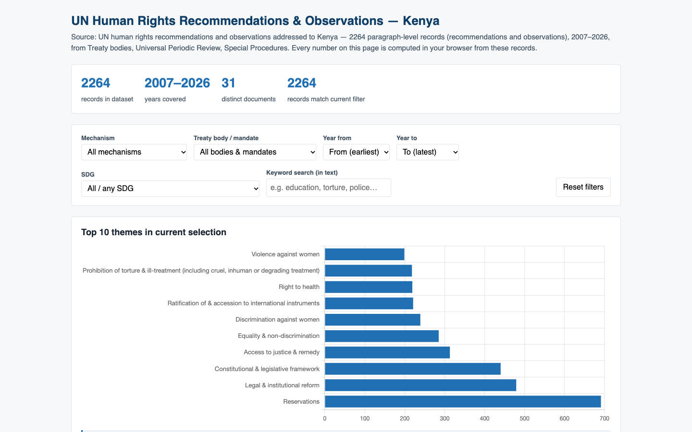
8/8 · 34.2 s · $0.024 · 261 lines
all checks passed
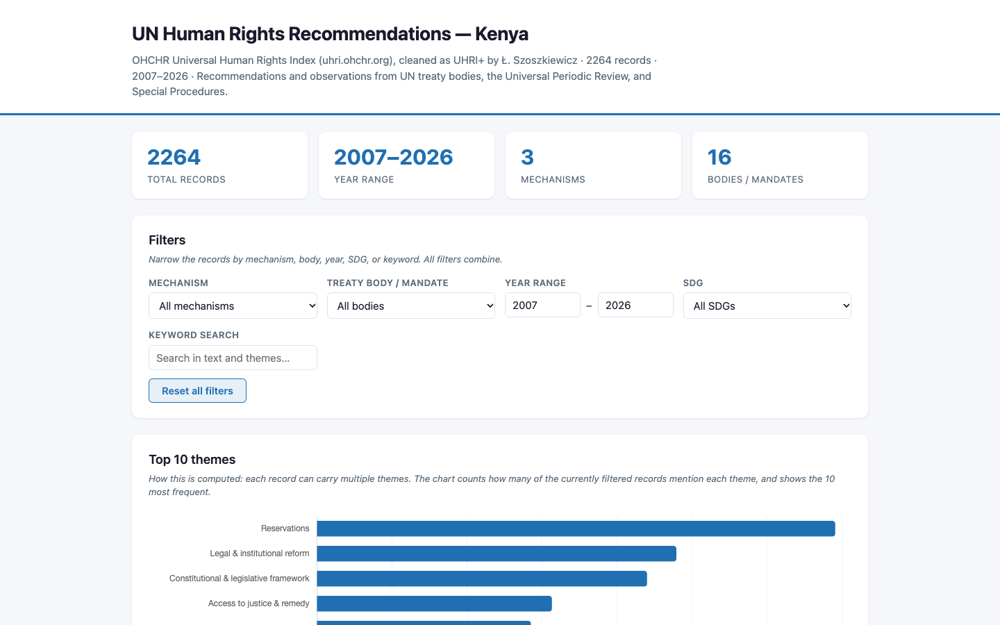
8/8 · 54.4 s · $0.062 · 716 lines
all checks passed

0/7 · 39.3 s · $0.011 · 0 lines
no_console_errors, no_network, uses_workshop_data, chart, table_min_rows, source_matches, text_matches
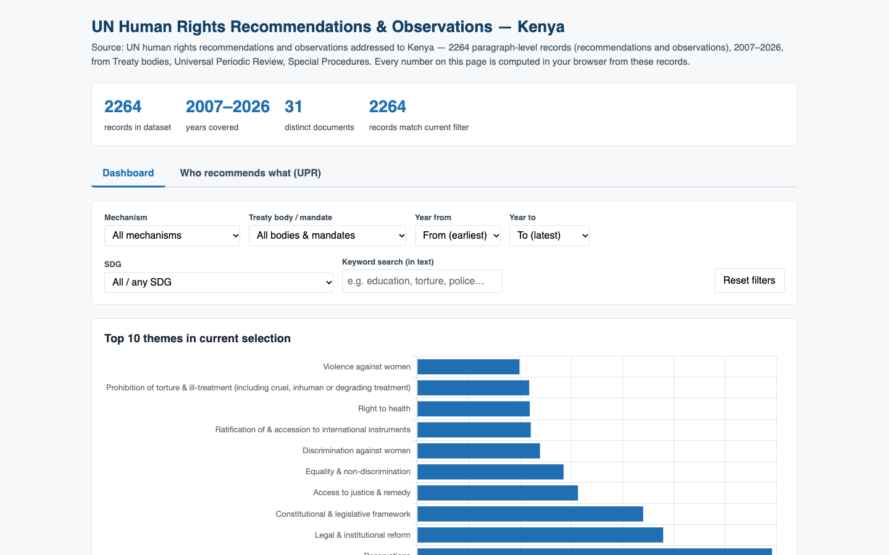
7/7 · 48.6 s · $0.035 · 451 lines
all checks passed
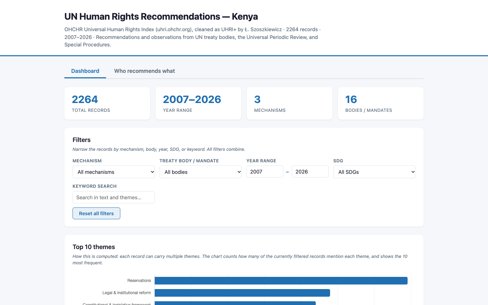
6/7 · 44.6 s · $0.059 · 1086 lines
text_matches

0/6 · 29.9 s · $0.009 · 0 lines
no_console_errors, no_network, uses_workshop_data, button_matches, source_matches, download

6/6 · 48.4 s · $0.032 · 450 lines
all checks passed

0/6 · 113.5 s · $0.127 · 0 lines
no_console_errors, no_network, uses_workshop_data, button_matches, source_matches, download

0/8 · 39.1 s · $0.010 · 0 lines
no_console_errors, no_network, uses_workshop_data, chart, search_box, button_matches, source_matches, text_contains_after_search
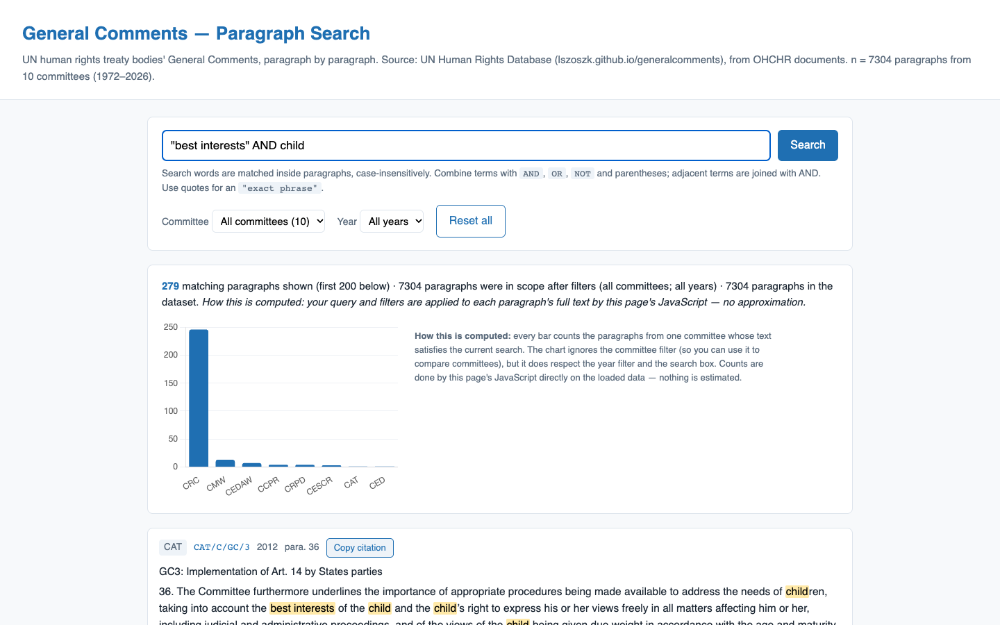
8/8 · 47.6 s · $0.025 · 425 lines
all checks passed
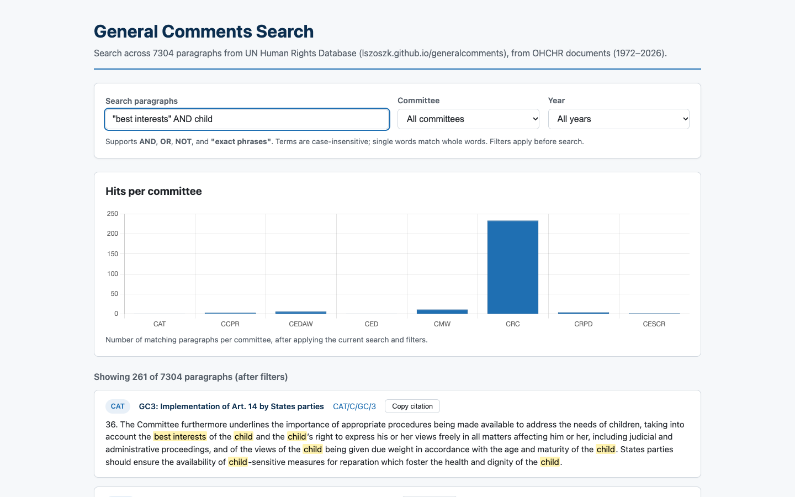
8/8 · 30.4 s · $0.029 · 567 lines
all checks passed

0/7 · 90.0 s · $0.024 · 0 lines
no_console_errors, no_network, uses_workshop_data, calls_studio_ask, batches_max, text_matches, button_matches
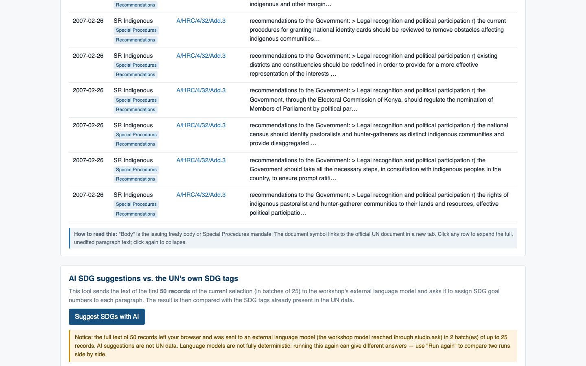
6/7 · 52.1 s · $0.032 · 468 lines
button_matches
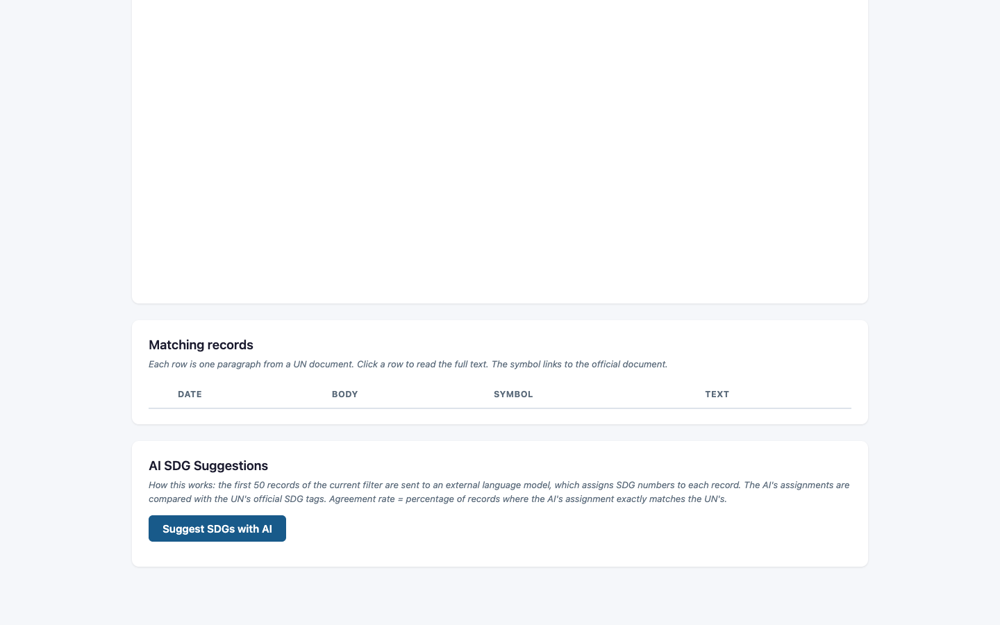
4/7 · 122.6 s · $0.128 · 800 lines
calls_studio_ask, batches_max, button_matches
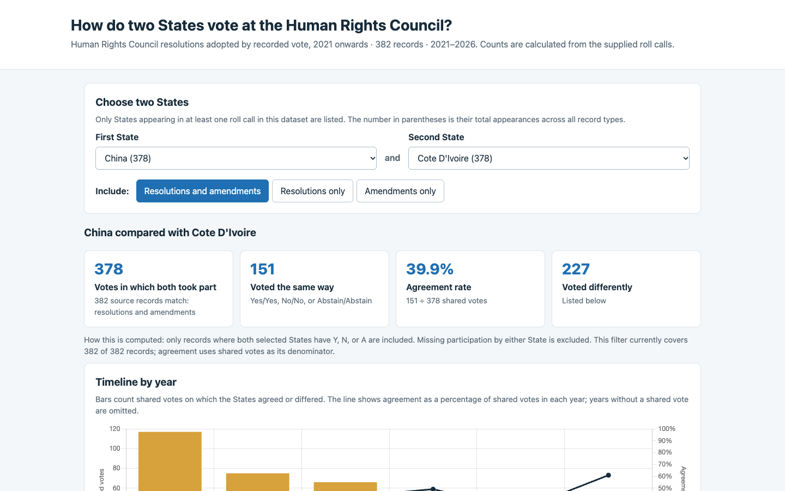
5/6 · 131.2 s · $0.064 · 455 lines
table_min_rows
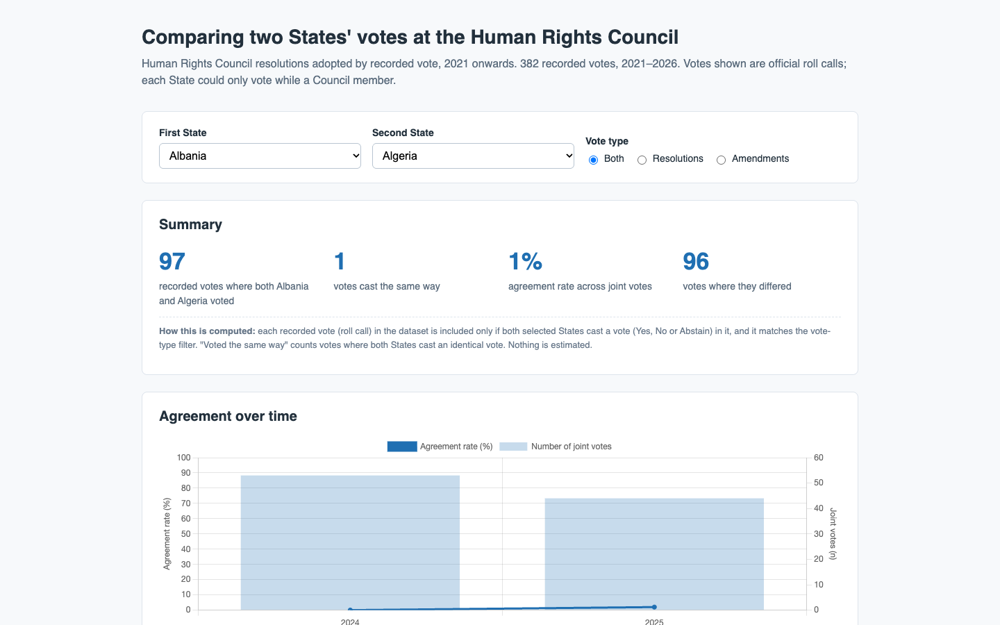
6/6 · 36.3 s · $0.018 · 266 lines
all checks passed
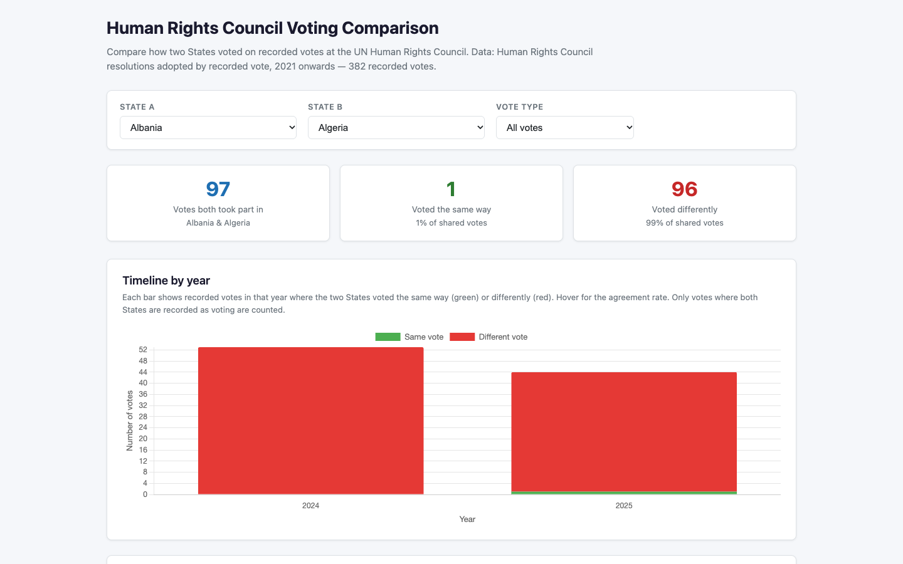
6/6 · 61.9 s · $0.061 · 434 lines
all checks passed